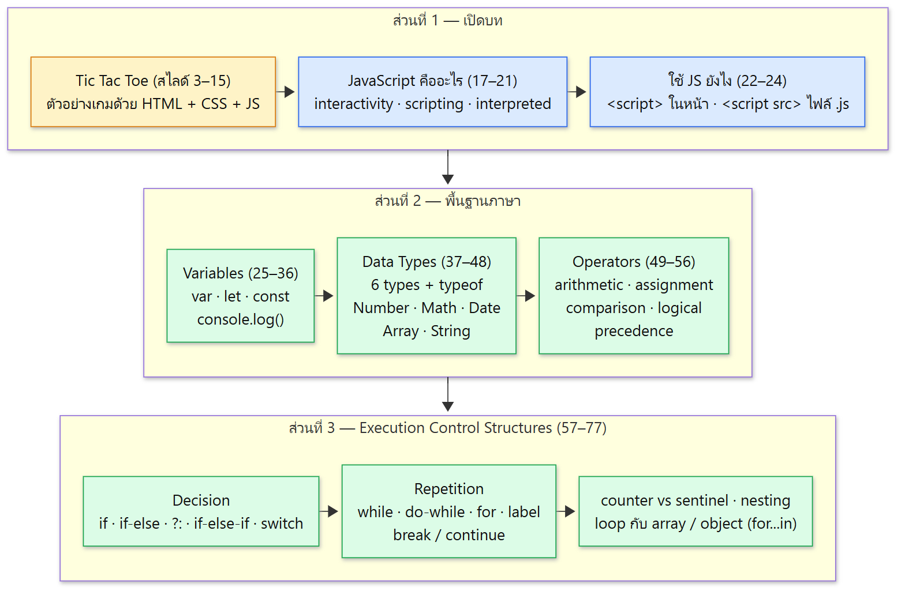
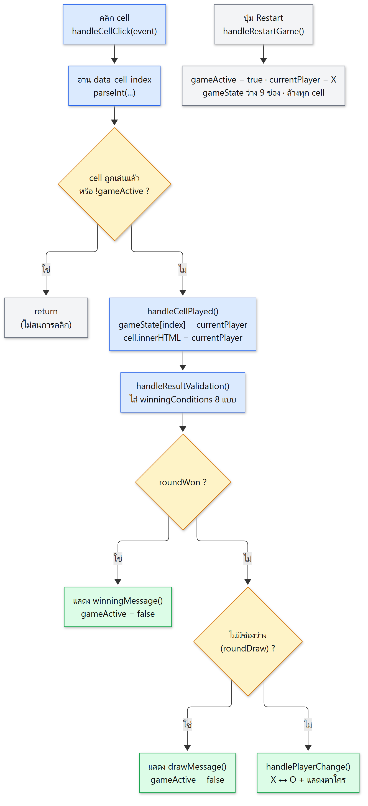
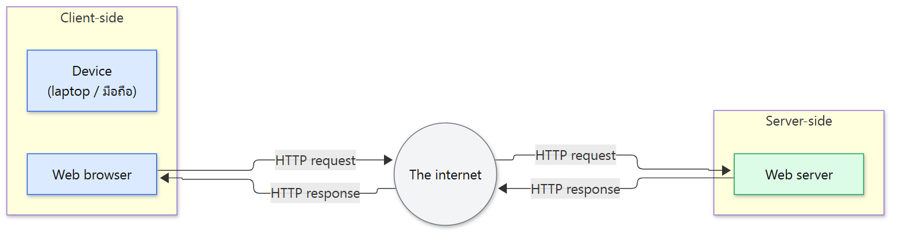
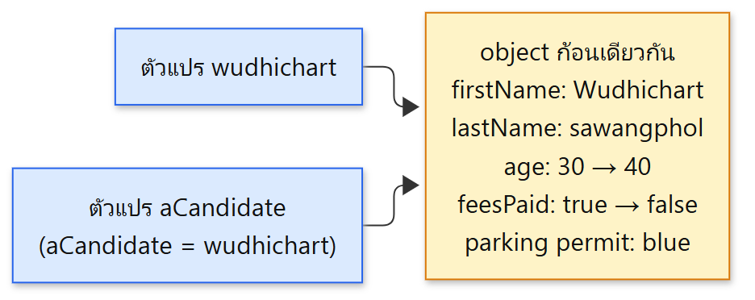
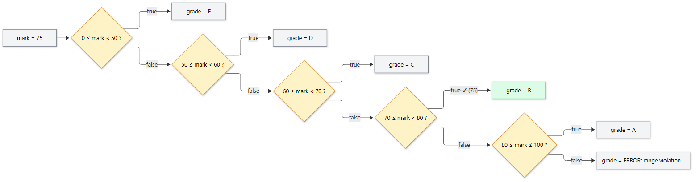
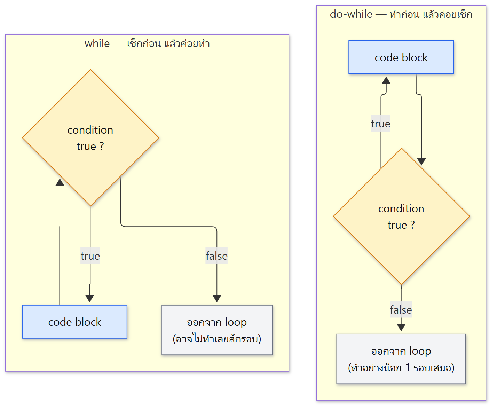
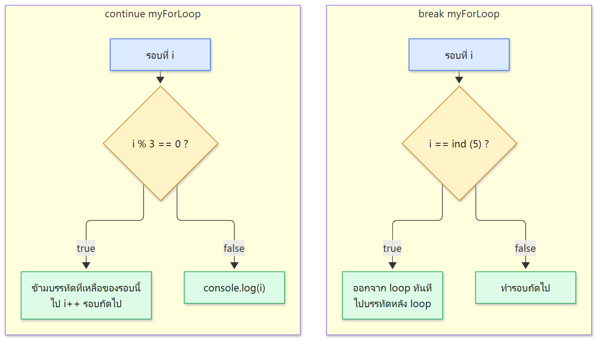

ภาพรวมบทนี้: บทแรกของ JavaScript (JS) เปิดด้วยตัวอย่างเกม Tic Tac Toe ที่ใช้ HTML + CSS + JS ทำงานร่วมกัน แล้วกลับมาปูพื้นภาษา: JS คืออะไร ใส่ในหน้าเว็บยังไง (
<script>/ ไฟล์.js) → ตัวแปร (var/let/const) → data types (6 ชนิด + built-in objects: Number, Math, Date, Array, String) → operators (คณิต, assignment, เปรียบเทียบ==vs===, logical, ลำดับความสำคัญ) → execution control structures (if / if-else / ternary / if-else-if / switch / while / do-while / for / label + break / continue)ไม่มีโจทย์คำนวณแบบสูตร แต่มีโจทย์ "What is the output?" เยอะมาก — ทุกข้อเฉลยไว้ในไฟล์นี้พร้อมเหตุผลทีละขั้น และ รันจริงด้วย node แล้ว
📌 เลข
(สไลด์ N)ในไฟล์นี้ = เลขหน้าใน PDF — หน้า 1–24 ตรงกับเลขที่พิมพ์บนสไลด์ แต่ตั้งแต่หน้า 25 เลขที่พิมพ์มุมขวาล่างจะ มากกว่า (เช่น PDF 25 พิมพ์ว่า 27, PDF 31 พิมพ์ว่า 36, PDF 78 พิมพ์ว่า 97) เพราะบางสไลด์ถูกตัดออกจากไฟล์

0. บทนี้ต้องได้อะไร?
แก่นอธิบายแนวคิดพื้นฐานของ JS ได้, เขียน JS พื้นฐานได้, อธิบายและใช้ execution control structures (decision + repetition) ได้
Class Objectives (สไลด์ 2) — นักศึกษาจะสามารถ:
- อธิบาย แนวคิดพื้นฐานของ JavaScript
- เขียน JavaScript พื้นฐาน
- อธิบายและใช้ execution control structures (โครงสร้างควบคุมการทำงาน)
Contents (สไลด์ 16): What is JavaScript? → How to use JavaScript? → JavaScript Variables → JavaScript Data Types and Operators → Execution Control Structures
1. Tic Tac Toe — สร้างเกมด้วย HTML + CSS + JS ยังไง?
แก่นแบ่งงานเป็น 3 ชั้น — HTML วางโครง (div 9 ช่อง + ข้อความสถานะ + ปุ่ม Restart), CSS จัดเป็น grid 3×3, JS ดักการคลิกแล้วแบ่งงานเป็น 5 ฟังก์ชัน (เล่นช่อง / เปลี่ยนผู้เล่น / ตรวจผล / จัดการคลิก / เริ่มใหม่)
💡 บทนี้ใช้เกมเป็น "ตัวอย่างนำ" ให้เห็นภาพว่า JS ทำอะไรให้หน้าเว็บได้ — โค้ดบางส่วน (เช่น
querySelector,addEventListener, arrow function=>) ยังไม่ได้อธิบายละเอียดในบทนี้ ให้ดูว่า "แต่ละส่วนทำหน้าที่อะไร" ก่อน
1.1 เกมนี้ต้องมีอะไรบ้าง (UI) และทำงานยังไง (Game Flow)?
แก่นUI = ชื่อเกม + ตาราง 3×3 ที่คลิกได้ + ข้อความบอกตา/ผล + ปุ่ม Restart · Flow = ดักคลิก → เช็กว่าเดินได้ไหม → อัปเดต state → เช็กชนะ/เสมอ → หยุดเกม → อัปเดต UI → Restart
เป้าหมาย (สไลด์ 3): สร้างเกม Tic Tac Toe (เกม OX) ด้วย JavaScript, HTML และ CSS
| เริ่มจาก UI (สไลด์ 4) | Game Flow (สไลด์ 5) |
|---|---|
| Title — ชื่อเกม | Track any clicks on cells — ดักทุกการคลิกที่ช่อง |
| 3x3 grid — ตาราง 3×3 | Check if the move is valid — เช็กว่าการเดินนี้ถูกต้องไหม |
| Each cell can be clicked — ทุกช่องคลิกได้ | Should update our game state — อัปเดตสถานะเกม |
| The sign of player is displayed on each cell — แสดงเครื่องหมายผู้เล่นในช่อง | Check the game state, who is won, or the game is draw — เช็กว่าใครชนะหรือเสมอ |
| The message to show the player's turn — ข้อความบอกว่าตาใคร | Stop the game when the conditions met — หยุดเกมเมื่อเข้าเงื่อนไข |
| The message to show who won the game or draw — ข้อความบอกผู้ชนะ/เสมอ | Update UI — อัปเดตหน้าจอ |
| Restart button — ปุ่มเริ่มใหม่ | Restart — เริ่มเกมใหม่ |
1.2 HTML ของเกมหน้าตาเป็นยังไง?
แก่นใช้ div ทำทั้งกล่องเกม (game-container) และช่อง (cell) 9 ช่อง แต่ละช่องมี data-cell-index 0–8 ไว้บอกตำแหน่ง แล้วดึง JS เข้ามาด้วย <script src="script.js">
<html lang="en">
<head>
<title>Tic Tac Toe</title>
<link rel="stylesheet" href="style.css" />
</head>
<body>
<section>
<h1 class="game-title">Tic Tac Toe</h1>
<div class="game-container">
<div data-cell-index="0" class="cell"></div>
<div data-cell-index="1" class="cell"></div>
<div data-cell-index="2" class="cell"></div>
<div data-cell-index="3" class="cell"></div>
<div data-cell-index="4" class="cell"></div>
<div data-cell-index="5" class="cell"></div>
<div data-cell-index="6" class="cell"></div>
<div data-cell-index="7" class="cell"></div>
<div data-cell-index="8" class="cell"></div>
</div>
<h2 class="game-status"></h2>
<button class="game-restart">Restart Game</button>
</section>
</body>
<script src="script.js"></script>
</html>
จับคู่ UI (สไลด์ 6) กับ element:
| UI ที่ต้องมี | element ในโค้ด |
|---|---|
| Title | <h1 class="game-title"> |
| 3x3 grid / each cell can be clicked | <div class="game-container"> + <div class="cell"> × 9 (index 0–8) |
| ข้อความบอกตา / ผลชนะ-เสมอ | <h2 class="game-status"> (ว่างไว้ ให้ JS เติมทีหลัง) |
| Restart button | <button class="game-restart"> |
| ไฟล์ style / ไฟล์ JS | <link rel="stylesheet" href="style.css"> / <script src="script.js"> (สไลด์ 8 ทำตัวหนาที่บรรทัดนี้) |
💡 ลำดับ index ของช่อง: แถวบน 0 1 2 · แถวกลาง 3 4 5 · แถวล่าง 6 7 8 — ต้องจำไว้ใช้ตอนอ่าน
winningConditions(หัวข้อ 1.5)
1.3 CSS ทำให้เป็นตาราง 3×3 ยังไง?
แก่น.game-container ใช้ display: grid + grid-template-columns: repeat(3, auto) → 3 คอลัมน์, แต่ละ .cell กว้าง/สูง 100px มีเส้นขอบ และ cursor: pointer ให้รู้ว่าคลิกได้
body {
font-family: "Arial", sans-serif;
}
section {
text-align: center;
}
.game-container {
display: grid;
grid-template-columns: repeat(3, auto);
width: 306px;
margin: 50px auto;
}
.cell {
font-family: "Permanent Marker", cursive;
width: 100px;
height: 100px;
box-shadow: 0 0 0 1px #333333;
border: 1px solid #333333;
cursor: pointer;
line-height: 100px;
font-size: 60px;
}
| rule | ทำอะไร |
|---|---|
section { text-align: center; } |
จัดเนื้อหาในเกมให้อยู่กลาง |
display: grid; grid-template-columns: repeat(3, auto); |
วาง cell เป็น grid 3 คอลัมน์ → 9 ช่องกลายเป็น 3×3 |
width: 306px; margin: 50px auto; |
กล่องเกมกว้าง 306px และอยู่กลางแนวนอน |
.cell width/height: 100px |
ช่องละ 100×100px |
box-shadow + border: 1px solid #333333 |
เส้นตาราง |
cursor: pointer |
เมาส์เป็นรูปมือ บอกว่าคลิกได้ |
line-height: 100px; font-size: 60px; |
ตัว X / O ขนาดใหญ่ อยู่กลางช่องแนวตั้ง |
1.4 JS ดักการคลิกยังไง และแบ่งเป็นฟังก์ชันอะไรบ้าง?
แก่นเลือกทุก .cell แล้วผูก event "click" ให้เรียก handleCellClick · ปุ่ม .game-restart ผูกกับ handleRestartGame · โครงโปรแกรมมี 5 ฟังก์ชัน
สไลด์ 9 — Add Event listener to cell:
/*
Add Event listener to cell
*/
document
.querySelectorAll(".cell")
.forEach((cell) => cell.addEventListener("click",
handleCellClick));
document.querySelectorAll(".cell")= หา element ทุกตัวที่มี classcell(9 ช่อง).forEach((cell) => ...)= ทำกับทีละช่องcell.addEventListener("click", handleCellClick)= เมื่อช่องนั้นถูกคลิก ให้เรียกฟังก์ชันhandleCellClick
สไลด์ 10 — โครง 5 ฟังก์ชัน + ผูกปุ่ม Restart:
function handleCellPlayed() {}
function handlePlayerChange() {}
function handleResultValidation() {}
function handleCellClick() {}
function handleRestartGame() {}
document
.querySelector(".game-restart")
.addEventListener("click", handleRestartGame);
| ฟังก์ชัน | หน้าที่ (เทียบ Game Flow) | สไลด์ |
|---|---|---|
handleCellPlayed |
อัปเดต game state + UI ของช่องที่ถูกเล่น | 11 |
handlePlayerChange |
สลับผู้เล่น X ↔ O และแสดงว่าตาใคร | 12 |
handleResultValidation |
เช็กชนะ / เสมอ / ยังเล่นต่อ | 13 |
handleCellClick |
รับการคลิก เช็กว่าเดินได้ไหม แล้วเรียกตัวอื่นต่อ | 14 |
handleRestartGame |
รีเซ็ตทุกอย่างเริ่มเกมใหม่ | 15 |
1.5 แต่ละฟังก์ชันเขียนยังไง?
แก่นคลิก → handleCellClick เช็กช่องว่าง/เกมยังเล่นอยู่ → handleCellPlayed เขียน X/O ลง state + จอ → handleResultValidation ไล่ 8 แบบที่ชนะ → ชนะ/เสมอ = หยุดเกม, ไม่งั้น handlePlayerChange สลับตา

(1) handleCellPlayed (สไลด์ 11)
function handleCellPlayed(clickedCell, clickedCellIndex)
{
/*
Update the game state to reflect the played move,
as well as update the user interface to reflect the
played move
*/
gameState[clickedCellIndex] = currentPlayer;
clickedCell.innerHTML = currentPlayer;
}
- บรรทัดแรก: เก็บเครื่องหมายผู้เล่นปัจจุบันลง array
gameStateที่ตำแหน่งของช่อง (อัปเดต state) - บรรทัดสอง: เขียนเครื่องหมายเดียวกันลงในช่องบนหน้าจอผ่าน
innerHTML(อัปเดต UI)
(2) handlePlayerChange (สไลด์ 12)
function handlePlayerChange() {
currentPlayer = currentPlayer === "X" ? "O" : "X";
statusDisplay.innerHTML = currentPlayerTurn();
}
- ใช้ ternary operator (หัวข้อ 9.3): ถ้าตอนนี้เป็น
"X"→ เปลี่ยนเป็น"O"ไม่งั้นเป็น"X" - แล้วอัปเดตข้อความสถานะว่าตาใคร
(3) handleResultValidation (สไลด์ 13)
const winningConditions = [
[0, 1, 2],
[3, 4, 5],
[6, 7, 8],
[0, 3, 6],
[1, 4, 7],
[2, 5, 8],
[0, 4, 8],
[2, 4, 6],
];
function handleResultValidation() {
let roundWon = false;
for (let i = 0; i <= winningConditions.length - 1; i++) {
const winCondition = winningConditions[i];
let a = gameState[winCondition[0]];
let b = gameState[winCondition[1]];
let c = gameState[winCondition[2]];
if (a === "" || b === "" || c === "") {
continue;
}
if (a === b && b === c) {
roundWon = true;
break;
}
}
if (roundWon) {
statusDisplay.innerHTML = winningMessage();
gameActive = false;
return;
}
/*
Check weather there are any empty cells from gameState
*/
let roundDraw = !gameState.includes("");
if (roundDraw) {
statusDisplay.innerHTML = drawMessage();
gameActive = false;
return;
}
/*
If it reach here, there are still moves to be played.
*/
handlePlayerChange();
}
อ่านทีละขั้น:
winningConditions= 8 แบบที่ชนะ: แนวนอน 3 ([0,1,2] [3,4,5] [6,7,8]), แนวตั้ง 3 ([0,3,6] [1,4,7] [2,5,8]), แนวทแยง 2 ([0,4,8] [2,4,6])- วน
forทุกแบบ ดึงค่า 3 ช่องมาเป็นa,b,c - ถ้ามีช่องไหนว่าง (
"") →continueข้ามไปเช็กแบบถัดไป - ถ้า
a === b && b === c(3 ช่องเป็นเครื่องหมายเดียวกัน) →roundWon = trueแล้วbreakออกจาก loop - ถ้าชนะ → แสดง
winningMessage(), ตั้งgameActive = false(หยุดเกม),return - ถ้าไม่ชนะ:
roundDraw = !gameState.includes("")→ ไม่มีช่องว่างเหลือ = เสมอ → แสดงdrawMessage(), หยุดเกม,return - ถ้ามาถึงบรรทัดสุดท้าย = ยังเล่นต่อได้ →
handlePlayerChange()สลับตา
💡 ฟังก์ชันนี้ใช้ของหลายอย่างที่เรียนในบทนี้พร้อมกัน: array,
for,continue,break,===,&&,||,!
(4) handleCellClick (สไลด์ 14)
function handleCellClick(clickedCellEvent) {
/*
Refer to the clicked cell
*/
const clickedCell = clickedCellEvent.target;
/*
Get the index of clicked cell from the attribute 'data-
cell-index'. The return value is string.
*/
const clickedCellIndex = parseInt(
clickedCell.getAttribute("data-cell-index")
);
/*
Check whether the cell has already been played,
or if the game is paused. If either of those is true we
will simply ignore the click.
*/
if (gameState[clickedCellIndex] !== "" || !gameActive) {
return;
}
/*
If everything is in the order we will proceed with the
game flow
*/
handleCellPlayed(clickedCell, clickedCellIndex);
handleResultValidation();
}
clickedCellEvent.target= ช่องที่ถูกคลิกgetAttribute("data-cell-index")คืนค่าเป็น string → ใช้parseInt(...)แปลงเป็นตัวเลข- ถ้าช่องนั้นถูกเล่นไปแล้ว (
!== "") หรือ เกมหยุดอยู่ (!gameActive) →returnไม่สนการคลิก (= "Check if the move is valid") - ถ้าผ่าน →
handleCellPlayed(...)แล้วhandleResultValidation()
(5) handleRestartGame (สไลด์ 15)
function handleRestartGame() {
gameActive = true;
currentPlayer = "X";
gameState = ["", "", "", "", "", "", "", "", ""];
statusDisplay.innerHTML = currentPlayerTurn();
document.querySelectorAll(".cell").forEach((cell)
=> (cell.innerHTML = ""));
}
- เปิดเกมใหม่ (
gameActive = true), ให้ X เริ่มก่อน, ล้างgameStateเป็นช่องว่าง 9 ช่อง, แสดงข้อความตาใคร, และล้างตัวอักษรในทุกช่องบนจอ
⚠️ สไลด์ 9–15 ใช้แต่ไม่ได้แสดงการประกาศ ตัวแปร/ฟังก์ชันเหล่านี้:
gameState,currentPlayer,gameActive,statusDisplay,winningMessage(),drawMessage(),currentPlayerTurn()— จากการใช้งานในโค้ดพอบอกได้แค่ว่าgameStateเป็น array 9 ช่อง (ดูสไลด์ 15) และcurrentPlayerเป็น"X"/"O"ถ้าจะเขียนเกมให้รันได้จริงต้องประกาศเพิ่มเอง (สไลด์ไม่ได้ให้โค้ดส่วนนี้)
⚠️ สไลด์ 6/8 วาง
<script src="script.js"></script>ไว้ หลัง</body>(ก่อน</html>) — ใช้ตามสไลด์ได้ แต่ถ้าเขียนเองให้จำตามสไลด์ 23 ว่า<script>ใส่ได้ใน<head>,<body>หรือทั้งสองที่💡 สไลด์ 13 เขียนคอมเมนต์ว่า "Check weather" (ที่ถูกคือ whether) — เป็นแค่คำผิดในคอมเมนต์ ไม่กระทบโค้ด
2. JavaScript คืออะไร ทำอะไรได้บ้าง?
แก่นJS คือภาษา scripting น้ำหนักเบา แบบ interpreted ที่ฝังใน HTML เพื่อเพิ่ม interactivity — เป็น 1 ใน 4 ส่วนของ web app (HTML / media / CSS / JS) และทำงานฝั่ง client (ใน browser)
2.1 Web application ประกอบด้วยอะไร?
| ส่วนประกอบ | จำนวน | หน้าที่ |
|---|---|---|
| HTML file | 1 ไฟล์ (A single) | บอก เนื้อหาและโครงสร้าง ของหน้า |
| Media files | 0 ไฟล์ขึ้นไป | รูป เสียง วิดีโอ |
| CSS files | 0 ไฟล์ขึ้นไป | บอก การนำเสนอ / style ของ element |
| JavaScript files | 0 ไฟล์ขึ้นไป | กำหนด พฤติกรรมแบบ dynamic, interactive |
💡 เปรียบเหมือนบ้าน: HTML = โครงบ้าน, CSS = สีและการตกแต่ง, JS = ระบบไฟฟ้าที่ทำให้กดสวิตช์แล้วมีอะไรเกิดขึ้น
2.2 หน้าเว็บทำงานยังไง?
แก่นฝั่ง client (device + web browser) ส่ง HTTP request ผ่าน internet ไปที่ web server ฝั่ง server แล้วได้ HTTP response กลับมา — สไลด์ไฮไลต์กรอบ "Client-side" ไว้

- Client-side = Device (ในรูปเป็นโน้ตบุ๊กและมือถือ) + Web browser (ในรูปเป็นโลโก้ Chrome, Firefox, Edge, Safari)
- The internet อยู่ตรงกลาง
- Server-side = Web server
- สไลด์วาดกรอบสีแดงล้อมฝั่ง Client-side — สื่อว่าเรื่องในบทนี้ (JS ที่ฝังในหน้า HTML) อยู่ฝั่งนี้
2.3 JS มีคุณสมบัติอะไร?
- ออกแบบมาเพื่อเพิ่ม interactivity ให้หน้า HTML — หน้าเว็บตอบสนองผู้ใช้ได้
- เป็น scripting language และเป็นภาษาโปรแกรม lightweight (น้ำหนักเบา)
- ปกติ ฝังตรง ๆ (embedded directly) ลงในหน้า HTML
- เป็น interpreted language = script รัน โดยไม่ต้อง compile ก่อน (without preliminary compilation)
- มาพร้อม library โค้ดสำเร็จรูปจำนวนมาก เรียกว่า APIs (Application Programming Interfaces) ดูได้ที่ https://developer.mozilla.org/en/docs/Web/API
2.4 JS ทำอะไรได้บ้าง?
| JS can… | ความหมาย |
|---|---|
| put dynamic text into an HTML page | ใส่ข้อความที่เปลี่ยนได้ลงในหน้า |
| react to events | ตอบสนองเหตุการณ์ เช่น การคลิก (แบบในเกม Tic Tac Toe) |
| read and write HTML elements | อ่าน/แก้ element ในหน้า (เช่น innerHTML) |
| be used to validate data | ตรวจข้อมูลที่ผู้ใช้กรอก |
| be used to detect the visitor's browser | ตรวจว่าผู้เข้าชมใช้ browser อะไร |
| be used to create cookies | สร้าง cookie |
สไลด์ปิดด้วยลิงก์ "Why JavaScript?" (เป็นลิงก์ ไม่มีเนื้อหาเพิ่มในสไลด์)
3. ใส่ JavaScript ในหน้าเว็บยังไง?
แก่น2 วิธี — (1) เขียนในแท็ก <script> ... </script> ตรงไหนก็ได้ใน <head>/<body> (2) แยกเป็นไฟล์ .js แล้วดึงด้วย <script src="myScript.js"></script> โดยในไฟล์ .js ไม่ต้องมีแท็ก <script>
3.1 วิธีที่ 1: เขียนในแท็ก <script>
แทรก JS ระหว่างส่วนต่าง ๆ ของโค้ด HTML ได้ด้วยแท็ก <script>
<!-- something.html -->
<script> // Starting of JavaScript
/* --- This is your JS Code --- */
console.log("Hello World!!!");
/* ---------------------------- */
</script> // End of JavaScript
<script>ใส่ได้ทุกที่ใน<head>,<body>หรือทั้งสองที่- comment ใน JS:
//= บรรทัดเดียว,/* ... */= หลายบรรทัด
3.2 วิธีที่ 2: import จากไฟล์ .js
| ไฟล์ | เนื้อหา |
|---|---|
something.html |
<script src="myScript.js"></script> — attribute src ชี้ไปที่ไฟล์ JS |
myScript.js |
/* All JS codes are written here */console.log("Hello Word!!!"); |
- Note: ไม่ต้องใส่
<script>ในไฟล์ .js — ทุกอย่างในไฟล์เป็น syntax ของ JS ล้วน - ตัวอย่างจริงคือเกม Tic Tac Toe ที่ดึง
script.js(หัวข้อ 1.2)
💡 สไลด์ 24 พิมพ์ข้อความว่า "Hello Word!!!" (ขาดตัว l) ส่วนสไลด์ 23 เป็น "Hello World!!!" — ถ้าโจทย์ถาม output ให้ตอบตามข้อความในโค้ดตรง ๆ
4. ตัวแปร (Variables) ประกาศ กำหนดค่า และแสดงผลยังไง?
แก่นตัวแปร = ที่เก็บข้อมูลชั่วคราวที่เรียกด้วยชื่อ ประกาศด้วย var / let / const · = คือ "กำหนดค่า" ไม่ใช่ "เท่ากับ" · let แก้ค่าได้แต่ประกาศซ้ำไม่ได้ · const แก้ไม่ได้ ประกาศซ้ำไม่ได้ · แสดงผลด้วย console.log()
หัวข้อย่อยตามสไลด์ 26: JS Variables · Variable declaration · Assignment statement · Displaying Output
4.1 ตัวอย่างแรก: ประกาศ กำหนดค่า ต่อ string แล้วแสดงผล
<script>
var firstName = "Wudhichart"; // Declaration and Initialization
var lastName, fullinfo; // Declaration
var ID;
ID = "9999999" //Assignment
lastName = "Sawangphol";
/* String concatenation */
fullinfo = ID + " " + firstName + " " + lastName;
/* Output to the Console */
console.log(fullinfo);
</script>
| บรรทัด | ชื่อเรียก | ความหมาย |
|---|---|---|
var firstName = "Wudhichart"; |
Declaration and Initialization | ประกาศ + ใส่ค่าเริ่มต้นพร้อมกัน |
var lastName, fullinfo; |
Declaration | ประกาศหลายตัวในบรรทัดเดียว (คั่น ,) ยังไม่มีค่า |
ID = "9999999" |
Assignment | กำหนดค่าให้ตัวแปรที่ประกาศไว้แล้ว |
ID + " " + firstName + ... |
String concatenation | ต่อ string ด้วย + |
console.log(fullinfo); |
Output to the Console | แสดงผลทาง console |
Output (กล่อง Output ในสไลด์ว่างไว้ให้เติม — รันจริงได้):
9999999 Wudhichart Sawangphol
เหตุผล: "9999999" + " " + "Wudhichart" + " " + "Sawangphol" ต่อกันเป็น string เดียว คั่นด้วยช่องว่าง
4.2 Variable คืออะไร ประกาศยังไง?
- Variable = วิธีให้โปรแกรม เก็บข้อมูลไว้ชั่วคราว แล้ว เรียกใช้ภายหลังด้วยชื่อ
- keyword
var= บอกว่ากำลังประกาศตัวแปร - การประกาศต้องมี ชื่อตัวแปร (variable name) และ/หรือ ค่าเริ่มต้น (initial value)
var firstName = "Wudhichart"; // มีทั้งชื่อและค่าเริ่มต้น
var lastName; // มีแค่ชื่อ
💡 เปรียบเหมือนกล่องที่ติดป้ายชื่อ — ใส่ของ (ค่า) ไว้ แล้วเรียกหากล่องจากป้ายชื่อ
4.3 ตั้งชื่อตัวแปรมีกฎอะไร?
- ต้องขึ้นต้นด้วยตัวอักษร (letter)
- มีได้แค่ ตัวอักษรผสมตัวเลข ห้ามมีช่องว่าง
- ห้ามเป็น keyword ของ JS (เช่น
var)
4.4 Assignment statement — ทำไม = ไม่ใช่ "เท่ากับ"?
แก่นใน JS = คือ assignment operator — เอาค่าทางขวาไปใส่ตัวแปรทางซ้าย ไม่ใช่เครื่องหมายเท่ากับแบบคณิตศาสตร์
var firstName = "Wudhichart"; //Declaration & Initialization
firstName = "Jidapa"; // Assignment
let nickName; // Declaration
nickName = "Pa"; // Assignment
firstName = firstName + " " + nickName // Assignment
console.log(firstName);
ไล่ค่าทีละขั้น:
firstName="Wudhichart"firstNameถูกแทนเป็น"Jidapa"(ค่าเดิมหายไป)nickNameประกาศด้วยletแล้วใส่"Pa"firstName = firstName + " " + nickName→ เอาค่าปัจจุบัน"Jidapa"ต่อ" "ต่อ"Pa"แล้วเก็บกลับเข้าfirstName
Output:
Jidapa Pa
💡 บรรทัด
firstName = firstName + ...ในคณิตศาสตร์เป็นไปไม่ได้ (x = x + y) แต่ใน JS แปลว่า "คำนวณขวาก่อน แล้วเอาไปทับซ้าย"
4.5 let ต่างจาก var ยังไง?
แก่นตั้งแต่ ES6 ประกาศตัวแปรด้วย let และ const ได้ · let ช่วยลด "redeclaration problem" ใน code block · let อัปเดตค่าได้ แต่ประกาศซ้ำไม่ได้
What is the output? — ตัวอย่าง var
var number = 1; /* First code block */
{ /* Another code block */
var number = 4;
}
console.log("number is " + number);
Output: number is 4
เหตุผล: var ไม่สน block { } (ตาราง var/let/const สไลด์ 34: var ไม่มี block scope) → var number = 4 ข้างใน { } คือการประกาศซ้ำ ตัวแปรตัวเดิม ค่าจึงถูกทับเป็น 4 = "redeclaration problem"
What is the output? — ตัวอย่าง let
let number = 2; /* First code block */
{ /* Another code block */
let number = 5;
}
console.log("number is " + number);
Output: number is 2
เหตุผล: let มี block scope → let number = 5 ข้างใน { } เป็นตัวแปร คนละตัว ที่อยู่แค่ใน block นั้น พอออกจาก block ก็หายไป console.log ข้างนอกจึงเห็น number ตัวนอกที่ยังเป็น 2
⚠️ สองกล่องในสไลด์ต้อง รันแยกกัน — ถ้าวางรวมในไฟล์/
<script>เดียว จะ error ทันที (SyntaxError: Identifier 'number' has already been declared) เพราะlet numberประกาศชื่อซ้ำกับvar numberที่อยู่ scope เดียวกัน (ตรงกับกฎ "let ประกาศซ้ำไม่ได้") — ผลด้านบนได้จากการรันแยกด้วย node
4.6 More examples: var / let ใน for loop
var i = 5;
for (var i = 0; i<10;i++){
// some statements
}
console.log("i is " + i);
Output: i is 10
เหตุผล: var i ใน for คือ i ตัวเดียวกับข้างนอก (ไม่มี block scope) → loop เพิ่ม i ไปจน i<10 เป็นเท็จ คือ i = 10 แล้วหยุด ค่า 5 เดิมถูกทับ
let j = 5;
for (let j = 0; j<10;i++){
// some statements
}
console.log("j is " + i);
⚠️ โค้ดกล่องที่สองในสไลด์ 32 พิมพ์ผิด — ส่วนเพิ่มค่าเขียน
i++(ไม่ใช่j++) และconsole.logพิมพ์i(ไม่ใช่j) รันจริงด้วย node ได้ผลแบบนี้:
- ถ้ารันกล่องนี้ เดี่ยว ๆ →
ReferenceError: i is not defined(ไม่มีiให้i++)- ถ้ารัน ต่อจากกล่องแรก (มี
var i= 10 อยู่แล้ว) → infinite loop เพราะjอยู่ที่ 0 ตลอด (j<10จริงเสมอ) ส่วนที่เพิ่มคือiถ้าแก้เป็นสิ่งที่สไลด์น่าจะตั้งใจ (
j++และ"j is " + j) → Output:j is 5เพราะlet jในforเป็นตัวแปรคนละตัว (block scope)jข้างนอกยังเป็น 5 — ตรงข้ามกับกรณีvarที่ได้ 10 · ถ้าข้อสอบออกข้อนี้ให้ดูโค้ดที่โจทย์ให้มาให้ดีหรือถามอาจารย์
4.7 const ใช้ทำอะไร?
แก่นconst ใช้ประกาศตัวแปรที่มี "ค่าคงที่" — อัปเดตค่าไม่ได้ และประกาศซ้ำไม่ได้
const number = 1;
constcannot be updated or re-declared- (ทดลองรันด้วย node:
number = 2;หลังประกาศ →TypeError: Assignment to constant variable.·const number = 2;ซ้ำ →SyntaxError: Identifier 'number' has already been declared)
4.8 ตารางเทียบ var vs let vs const
แก่นvar = global/function scope, ประกาศซ้ำได้, hoist ได้ · let = block scope, แก้ค่าได้แต่ประกาศซ้ำไม่ได้ · const = block scope, แก้ค่าก็ไม่ได้
(สไลด์เป็นรูปตาราง "VAR vs LET vs CONST" — ถอดเป็นตารางตามรูป)
var |
let |
const |
|
|---|---|---|---|
| Stored in Global Scope | ✅ | ❌ | ❌ |
| Function Scope | ✅ | ✅ | ✅ |
| Block Scope | ❌ | ✅ | ✅ |
| Can Be Reassigned? | ✅ | ✅ | ❌ |
| Can Be Redeclared? | ✅ | ❌ | ❌ |
| Can Be Hoisted? | ✅ | ❌ | ❌ |
💡 ตารางนี้อธิบายผลของสไลด์ 31–32 ได้ตรง ๆ:
varไม่มี Block Scope + Redeclare ได้ → ค่าใน{ }ทับค่าข้างนอก (4, 10) ·letมี Block Scope → ค่าใน{ }แยกตัว (2, 5)⚠️ แถว "Can Be Hoisted?" ในทางเทคนิคของ JS,
let/constก็ถูก hoist แต่ใช้ก่อนบรรทัดประกาศไม่ได้ — ตอบข้อสอบให้ตอบ ตามตารางของสไลด์ (var ✅, let/const ❌)
4.9 แสดงผลยังไง?
แก่นแสดงผลได้ 2 ที่ — console (สำหรับนักพัฒนา) กับบนหน้าเว็บ · console.log() เขียนค่าของ expression ออก console · เปิด console: Windows กด F12, macOS กด option+cmd+J
- มี 2 ทาง:
- On console — ใช้เป็นหลักโดย developer
- On webpage — แสดงบนหน้าเว็บ
console.log()สั่งให้ JS log (เขียนออก) ค่าของ expression ไปที่ console เช่นconsole.log(fullinfo);- เปิด console:
| OS | ปุ่ม |
|---|---|
| Windows | F12 |
| macOS | option + cmd + J |
4.10 Check understanding
โจทย์: สร้างหน้า HTML ที่มี JS แล้วทำตามลำดับ — ประกาศตัวแปร number1 → แสดง number1 (ใน console) → กำหนด number1 เป็น 10 → แสดง number1 → บวก 10 เข้าไปใน number1 → แสดง number1 · What is the output in your Console?
เฉลย (เขียนตามขั้นของโจทย์):
<script>
var number1; // ประกาศ
console.log(number1); // แสดง
number1 = 10; // กำหนดเป็น 10
console.log(number1); // แสดง
number1 += 10; // บวก 10 (เท่ากับ number1 = number1 + 10)
console.log(number1); // แสดง
</script>
Output (รันด้วย node):
undefined
10
20
เหตุผล:
- ประกาศแล้วยังไม่กำหนดค่า → ค่าเป็น
undefined(ตามนิยาม Undefined ในสไลด์ 38) - หลัง
= 10→10 - หลังบวก 10 →
20(+=ดูตาราง assignment operators สไลด์ 52)
5. JS มี data type อะไรบ้าง?
แก่น6 ชนิด — Boolean, Number, String, Null, Undefined, Objects · ดูชนิดด้วย typeof · JS เป็น weakly typed: ตัวแปรเดียวเปลี่ยนไปเก็บค่าคนละชนิดระหว่างรันได้
5.1 Six data types in JS
| Type | ความหมายตามสไลด์ |
|---|---|
| Boolean | ค่าตรรกะ มีได้ 2 ค่า: true และ false |
| Number | ค่าตัวเลข ช่วงระหว่าง −(253−1) ถึง 253−1 |
| String | ข้อมูลข้อความ (textual data) |
| Null | การ ตั้งใจ ให้ไม่มีค่า object ใด ๆ คือ "Nothing" |
| Undefined | ตัวแปรที่ ยังไม่ถูกกำหนดค่า จะมีค่า undefined |
| Objects | User-defined objects และ Built-in objects (หัวข้อ 6) |
💡 Null vs Undefined:
null= ตั้งใจใส่ว่า "ไม่มีอะไร" (เหมือนกล่องที่เราเขียนป้ายว่า "ว่าง") ·undefined= ยังไม่ได้ใส่อะไรเลย (กล่องใหม่ที่ยังไม่เคยเปิด) — เช่นnumber1ในหัวข้อ 4.10
5.2 ตัวอย่าง typeof — What is the output?
<script>
//3. Data-types: Getting started with data types
var outMessage = "";
var myNum = 10;
var myStr = "ten";
var MyBool = true;
outMessage = "The value of myNum is " + myNum + " and type is " + (typeof myNum);
console.log(outMessage);
outMessage = "The value of myStr is " + myStr + " and type is " + (typeof myStr);
console.log(outMessage);
outMessage = "The value of MyBool is " + MyBool + " and type is " + (typeof MyBool);
console.log(outMessage);
myNum = "Hello World!!"; // Is this Possible?
outMessage = "The value of myNum is " + myNum + " and type is " + (typeof myNum);
console.log(outMessage);
</script>
Output (รันด้วย node):
The value of myNum is 10 and type is number
The value of myStr is ten and type is string
The value of MyBool is true and type is boolean
The value of myNum is Hello World!! and type is string
เหตุผล:
typeofคืนชื่อชนิดเป็น string ตัวเล็ก:10→number,"ten"→string,true→boolean- "Is this Possible?" → ได้ —
myNumเคยเก็บตัวเลข แล้วเปลี่ยนไปเก็บ string ได้โดยไม่ error,typeof myNumจึงกลายเป็นstring - สไลด์สรุปว่า JavaScript is weakly typed — ตัวแปรเปลี่ยนชนิดค่าระหว่างรันโปรแกรมได้
⚠️ สไลด์ 39 เขียนว่า "weakly typed holding different values of the same data type during program execution" แต่ตัวอย่างในสไลด์เดียวกันแสดงว่าตัวแปร
myNumเก็บค่า ต่างชนิด (number → string) — จำจากตัวอย่างว่า "ตัวแปรเดียวเปลี่ยนชนิดได้" และถ้าเจอประโยคนี้ในข้อสอบให้ถามอาจารย์
6. Objects: user-defined และ built-in objects
แก่นobject มี 2 กลุ่ม — user-defined (เราสร้างเอง เป็นชุด property) กับ built-in standard objects (Number, Math, Date, Array, String) ที่มี property/method ให้ใช้เลย
สไลด์ 40 แบ่ง JavaScript Data Types: Objects เป็น
- User-defined object
- Built-in Standard objects: Number · Dates · Math · Array · String
6.1 User-defined object สร้างและเข้าถึง property ยังไง?
แก่นobject อธิบายของหนึ่งชิ้นด้วยข้อมูลหลายอย่าง (เช่นคนมีชื่อ เพศ อายุ) · เข้าถึง property ได้ 2 แบบ .property หรือ ["property"] · ถ้าเอา object ไปใส่อีกตัวแปร ทั้งสองชื่อชี้ object เดียวกัน แก้ทางไหนก็เห็นทั้งคู่
<script> //3. User-defined object
var wudhichart = {
firstName: "Wudhichart",
lastName: "sawangphol",
age: 30,
feesPaid: true
};
var aCandidate, aProperty;
aCandidate = wudhichart;
wudhichart.age = 40;
console.log("Wudhichart is " + wudhichart.age + " years old.");
console.log("Candidate is " + aCandidate.age + " years old.");
wudhichart["feesPaid"] = false;
console.log("Candidate up-to-date with fees: " + aCandidate["feesPaid"]);
aCandidate["parking permit"] = "blue";
console.log("Wudhichart's parking permit is " + wudhichart["parking permit"]);
aProperty = "parking permit";
console.log("Wudhichart's parking permit is " + wudhichart[aProperty]);
aProperty = "age";
console.log("Wudhichart is " + wudhichart[aProperty] + " years old.");
</script>
- สร้าง object ด้วย
{ ชื่อproperty: ค่า, ... } - Access each property by
.propertyor["property"]
Output (รันด้วย node):
Wudhichart is 40 years old.
Candidate is 40 years old.
Candidate up-to-date with fees: false
Wudhichart's parking permit is blue
Wudhichart's parking permit is blue
Wudhichart is 40 years old.

เหตุผลทีละบรรทัด:
aCandidate = wudhichart;→ ไม่ได้ก๊อปเป็น object ใหม่ — สองชื่อนี้ใช้ object ก้อนเดียวกัน (ดูได้จากผลบรรทัด 2–3)- แก้
wudhichart.age = 40→ อ่านผ่านwudhichart.ageได้ 40 และอ่านผ่านaCandidate.ageก็ได้ 40 - แก้
wudhichart["feesPaid"] = false→ อ่านผ่านaCandidate["feesPaid"]ได้ false - เพิ่ม property ใหม่
"parking permit"ผ่านaCandidate→ อ่านผ่านwudhichartได้ blue (ชื่อ property มีช่องว่าง จึงต้องใช้แบบ["..."]เท่านั้น) wudhichart[aProperty]เมื่อaProperty = "parking permit"→ ใช้ ตัวแปรเป็นชื่อ property ได้ → blue- เปลี่ยน
aProperty = "age"→wudhichart["age"]→ 40
💡 เปรียบเหมือนบ้านหลังเดียวที่มี 2 บ้านเลขที่ (ชื่อเรียก 2 ชื่อ) — ทาสีบ้านผ่านชื่อไหน อีกชื่อก็เห็นสีใหม่
6.2 Built-in Standard objects มีอะไร?
| Object | ความหมายตามสไลด์ |
|---|---|
| Number | wrapper object ให้ทำงานกับค่าตัวเลข |
| Math | built-in object ที่มี property และ method ทางคณิตศาสตร์ |
| Date | จุดเวลาหนึ่งจุด อิงจาก จำนวน millisecond นับตั้งแต่ 1 January 1970 UTC |
| Array | global object ที่ใช้สร้าง array — object ระดับสูงแบบ list |
| String | constructor ของ string หรือลำดับตัวอักษร |
6.3 Number
แก่นสร้างด้วย new Number("10") · method ของ Number. เช่น isNaN / isInteger / parseInt / parseFloat · method ของ instance เช่น toExponential / toString / valueOf · NaN = Not a Number
- Create Number:
var aNum1 = new Number("10"); var aNum2 = new Number("20"); - Methods (เรียกผ่าน
Number.):Number.isNaN()·Number.isInteger()·Number.parseInt()·Number.parseFloat() - Number instance methods (เรียกผ่านตัว object):
numberObj.toExponential()·numberObj.toString()·numberObj.valueOf()
ตัวอย่างในสไลด์ + output (รันด้วย node):
| โค้ด | Output | เหตุผล |
|---|---|---|
console.log(Number.parseInt("10.569")); |
10 |
parseInt เอาแค่ส่วนจำนวนเต็ม |
console.log(Number.parseFloat("10.569")); |
10.569 |
parseFloat เก็บทศนิยม |
console.log(Number.parseInt("Hello")); |
NaN |
"Hello" แปลงเป็นตัวเลขไม่ได้ → NaN: Not a Number |
console.log(Number.isNaN(Number.parseInt("Hi"))); |
true |
parseInt("Hi") = NaN → isNaN ตอบ true |
console.log(aNum1.toString()); |
10 |
แปลงเป็น string "10" |
console.log(aNum1.valueOf()); |
10 |
คืนค่าตัวเลขข้างใน |
console.log(aNum1.toExponential()); |
1e+1 |
เขียนแบบเลขยกกำลัง 1 × 101 |
6.4 Math
แก่นMath ไม่มี constructor (ไม่ต้อง new) — เรียกใช้ตรง ๆ เช่น Math.PI, Math.pow(x, y)
- There is no constructor for Math
- Properties:
Math.PI·Math.SQRT2 - Methods:
Math.pow(x, y)·Math.round(x)·Math.abs(x)
console.log("The valus of PI is " + Math.PI);
console.log("5^2 = " + Math.pow(5,2));
Output:
The valus of PI is 3.141592653589793
5^2 = 25
(Math.pow(5,2) = 5 ยกกำลัง 2 = 25 · คำว่า "valus" สะกดตามสไลด์)
6.5 Date
แก่นสร้างได้ 3 แบบ — new Date() (ตอนนี้), new Date(value) (millisecond), new Date(dateString) (ISO 8601 YYYY-MM-DDTHH:mm:ss) · method เช่น Date.parse(), getDate(), getDay(), getFullYear()
- Create Date:
var now = new Date(); // Current date and time var aDate1 = new Date(value); // Millisec var aDate2 = new Date(dateString); - Note:
dateStringต้องอยู่ในรูปแบบ ISO 8601 เช่น2017-08-13T10:20:30(YYYY-MM-DDTHH:mm:ss) - Methods:
Date.parse() - Date instance methods:
dateObj.getDate()·dateObj.getDay()·dateObj.getFullYear()
console.log(now.getDate());
console.log(now.getDay());
console.log(now.getFullYear());
- output ขึ้นกับ วันเวลาที่รัน เพราะ
now= เวลาปัจจุบัน - ลองรันกับวันที่ตัวอย่างในสไลด์
new Date("2017-08-13T10:20:30")ด้วย node:getDate()→13,getDay()→0,getFullYear()→2017(13 ส.ค. 2017 เป็นวันอาทิตย์ —getDay()ได้ 0 แปลว่าเป็นเลขลำดับวันในสัปดาห์ ไม่ใช่วันที่)
⚠️ อย่าสับสน:
getDate()= วันที่ ของเดือน (13) ·getDay()= วันในสัปดาห์ เป็นตัวเลข (0) — สไลด์ไม่ได้อธิบายความต่างนี้ ผลข้างบนมาจากการรันจริง
6.6 Array
แก่นสร้างด้วย [...] หรือ new Array(n) · เข้าถึงด้วย index เริ่ม 0 · length = จำนวนสมาชิก · Array.isArray() · instance method: pop / push / indexOf / forEach / map / filter / reduce / reduceRight / every / some / lastIndexOf
- Create array:
var instructors = ["Wudhichart", "Wud"]; var anArray = new Array(5); - Access array by index:
console.log(instructors[0]);→Wudhichart(index เริ่มที่ 0) - Array Properties:
array.length— จำนวนสมาชิกใน array - Methods:
Array.isArray() - Array instance methods (สไลด์ 46):
| method | ทำอะไร (ตามคอมเมนต์ในสไลด์) |
|---|---|
arrObj.pop() |
ลบและคืน สมาชิกตัว สุดท้าย |
arrObj.push() |
เพิ่ม สมาชิกหนึ่งตัวหรือมากกว่า ต่อท้าย |
arrObj.indexOf(value) |
คืน index แรก ของสมาชิกที่เท่ากับค่าที่ระบุ |
ตัวอย่าง + output (รันด้วย node):
| โค้ด | Output | เหตุผล |
|---|---|---|
console.log(Array.isArray(instructors)); |
true |
instructors เป็น array |
console.log(instructors.length); |
2 |
มี 2 สมาชิก |
console.log(instructors.indexOf("Wud")); |
1 |
"Wud" อยู่ตำแหน่งที่ 2 = index 1 |
- Array instance methods เพิ่มเติม (สไลด์ 47):
| method | คำอธิบายในสไลด์ |
|---|---|
arrobj.forEach(function) |
เรียกฟังก์ชันที่ให้ไป 1 ครั้งต่อสมาชิกแต่ละตัว (เกม Tic Tac Toe ใช้ forEach กับทุก cell) |
arrobj.map(function) |
สร้าง array ใหม่ จากผลของการเรียกฟังก์ชันกับสมาชิกทุกตัว |
arrobj.filter() · arrobj.reduce() · arrobj.reduceRight() · arrobj.every() · arrobj.some() · arrobj.indexOf() · arrobj.lastIndexOf() |
สไลด์แค่ระบุชื่อ ไม่ได้อธิบาย — อ้างอิง MDN: https://developer.mozilla.org/en-US/docs/Web/JavaScript/Reference/Global_Objects/Array |
⚠️ forEach vs map: forEach = ทำ อะไรสักอย่างกับทุกตัว · map = สร้าง array ใหม่ จากผลลัพธ์
6.7 String
แก่นสร้างแบบ primitive "..." หรือ String object new String("...") · ต่อด้วย + · length = จำนวนตัวอักษร · method: charAt / split / substring
- Create String:
var str = "Hello World"; //Primitive string var str_obj = new String("Hello World"); // String object - String concatenation ใช้
+ - Properties:
string.length - String instance methods:
stringObj.charAt()·stringObj.split()·stringObj.substring()
ตัวอย่าง + output (รันด้วย node):
| โค้ด | Output | เหตุผล |
|---|---|---|
console.log(str_obj.length); // 11 |
11 |
"Hello World" มี 11 ตัว (นับช่องว่างด้วย) |
str_obj.charAt(1); // e |
(ค่าคือ e) |
ตัวที่ index 1 (H=0, e=1) |
console.log(str_obj.split(" ")); |
[ 'Hello', 'World' ] |
แยก string ตรงช่องว่าง ได้ array 2 ตัว |
console.log(str_obj.substring(3,10)); |
lo Worl |
เอาตั้งแต่ index 3 ถึง ก่อน index 10 (ไม่รวมตัวที่ 10) |
ไล่ index ของ substring(3,10):
| index | 0 | 1 | 2 | 3 | 4 | 5 | 6 | 7 | 8 | 9 | 10 |
|---|---|---|---|---|---|---|---|---|---|---|---|
| ตัวอักษร | H | e | l | l | o | (ช่องว่าง) | W | o | r | l | d |
→ ได้ "lo Worl" (7 ตัว = 10 − 3)
💡 บรรทัด
str_obj.charAt(1);ในสไลด์ ไม่มีconsole.log— ถ้ารันจริงจะไม่แสดงอะไรออกมา คอมเมนต์// eแค่บอกว่าค่าที่ได้คือe
7. Operators มีอะไรบ้าง และคำนวณตามลำดับไหน?
แก่น5 เรื่อง — arithmetic (+ - * / % ** ++ --), assignment (= += -= ...), comparison (== แปลงชนิดก่อน vs === ต้องชนิดเดียวกัน), logical (&& || !), และ operator precedence (วงเล็บก่อนเสมอ … assignment ทำหลังสุด)
สไลด์ 49 แบ่งเป็น: Arithmetic operators · Assignment operators · Comparison operators · Boolean (Logical) Operators · Operator precedence
7.1 Arithmetic operators
แก่น+ - * / % เป็น binary operator · % = เศษจากการหาร (5 % 3 = 2) · ใช้วงเล็บจัดกลุ่มได้ · คูณ/หาร/เศษ ทำก่อน บวก/ลบ ทำทีหลัง
- ตัวดำเนินการพื้นฐาน
+, -, *, /, %เป็น binary operators (ใช้กับ 2 ตัวถูกดำเนินการ) %= remainder operator (เศษจากการหาร) เช่น5 % 3ได้2(รัน node ยืนยัน)- ใช้ วงเล็บ จัดกลุ่ม expression ได้เหมือนพีชคณิต
- ตัวดำเนินการถูกใช้ตาม ลำดับความสำคัญ (precedence):
- คูณ หาร เศษ ทำ ก่อน
- บวก ลบ ทำ ทีหลัง
Summary of Arithmetic operators (สไลด์ 51):
| JavaScript Operators | Arithmetic Operators | JavaScript Expression |
|---|---|---|
| Addition | + |
x + y |
| Subtraction | - |
x - y |
| Division | / |
x / y |
| Multiplication | * |
x * y |
| Remainder | % |
x % y |
| Exponentiation | ** |
x ** y |
| Increment | ++ |
++x or x++ |
| Decrement | -- |
--x or x-- |
| Unary negation | - |
-x |
| Unary plus | + |
+x |
7.2 Assignment operators
แก่นassignment operator เอาค่าของตัวถูกดำเนินการทางขวาไปใส่ทางซ้าย · x op= y = x = x op y
| JavaScript Operators | Assignment Operators | JavaScript Expression | Meaning |
|---|---|---|---|
| Assignment | = |
x = y |
x = y |
| Addition Assignment | += |
x += y |
x = x + y |
| Subtraction Assignment | -= |
x -= y |
x = x - y |
| Division Assignment | /= |
x /= y |
x = x / y |
| Multiplication Assignment | *= |
x *= y |
x = x * y |
| Remainder Assignment | %= |
x %= y |
x = x % y |
| Exponentiation Assignment | **= |
x **= y |
x = x ** y |
7.3 Comparison operators: == ต่างจาก === ยังไง?
แก่น=== (strict) จริงก็ต่อเมื่อ "ชนิด" และ "ค่า" เหมือนกัน · == (type-converting / abstract) แปลงชนิดก่อนแล้วค่อยเทียบ → "1" == 1 เป็น true แต่ "1" === 1 เป็น false
- JS มีการเปรียบเทียบทั้งแบบ strict และแบบ type–converting
- Strict comparison (
===) — true ก็ต่อเมื่อ type และ content ของทั้งสองข้างเหมือนกัน - Type–converting comparison (
==) (หรือที่นิยมเรียก abstract comparison) — แปลงชนิด ของตัวถูกดำเนินการก่อน แล้วค่อยเทียบ
| โค้ด | ผล (สไลด์ + รัน node ตรงกัน) | เหตุผล |
|---|---|---|
console.log("1" === 1); |
false |
string กับ number ชนิดต่างกัน |
console.log("1" === "1"); |
true |
ชนิดเดียวกัน ค่าเท่ากัน |
console.log("1" == 1); |
true |
แปลง "1" เป็น 1 ก่อน แล้วเท่ากัน |
console.log("1" == "1"); |
true |
ค่าเท่ากัน |
Summary of Comparison operators (สไลด์ 54):
| JavaScript Operators | Comparison Operators | JavaScript Expression |
|---|---|---|
| Equality | == |
x == y |
| Inequality | != |
x != y |
| Strict equality | === |
x === y |
| Strict inequality | !== |
x !== y |
| Greater than | > |
x > y |
| Greater than or equal | >= |
x >= y |
| Less than | < |
x < y |
| Less than or equal | <= |
x <= y |
💡 เปรียบ
==เหมือนครูตรวจข้อสอบที่ยอมรับ "หนึ่ง" กับ "1" ว่าเป็นคำตอบเดียวกัน ·===เหมือนเครื่องตรวจที่ต้องเขียนรูปแบบเดียวกันเป๊ะ
7.4 Logical operators
แก่นใช้กับค่า Boolean เป็นหลัก · && จริงเมื่อจริงทั้งคู่ · || จริงเมื่อจริงอย่างน้อยหนึ่ง · ! กลับค่า
| JavaScript Operators | Logical Operators | JavaScript Expression |
|---|---|---|
| Logical AND | && |
expr1 && expr2 |
| Logical OR | || |
expr1 || expr2 |
| Logical NOT | ! |
! expr |
ตารางความจริง (truth table) ตามสไลด์:
| A | B | A && B |
A || B |
|---|---|---|---|
| T | T | T | T |
| T | F | F | T |
| F | T | F | T |
| F | F | F | F |
| A | !A |
|---|---|
| T | F |
| F | T |
💡
&&= "และ" ต้องผ่านทุกด่าน ·||= "หรือ" ผ่านด่านเดียวก็พอ
7.5 Operator precedence — อะไรทำก่อน?
แก่นวงเล็บ → postfix ++/-- → ! / unary +/- / prefix ++/-- → ยกกำลัง → * / % → + - → < <= > >= → == != === !== → && → || → assignment (หลังสุด)
| ลำดับ | Operator | ทิศทาง |
|---|---|---|
| 1 | Grouping หรือวงเล็บ () |
|
| 2 | Postfix increment (decrement) x++ x-- |
|
| 3 | Logical NOT !, Unary Plus (Negation) +x -x, Prefix increment (decrement) ++x --x |
right-to-left |
| 4 | Exponentiation ** |
|
| 5 | Multiplication, Division, Remainder * / % |
left-to-right |
| 6 | Addition, Subtraction + - |
left-to-right |
| 7 | Less Than (or Equal), Greater Than (or Equal) < <= > >= |
left-to-right |
| 8 | (Strict) Equality, (Strict) Inequality == != === !== |
left-to-right |
| 9 | Logical AND && |
|
| 10 | Logical OR || |
|
| 11 | Assignment = += ... |
💡 ใช้ได้กับตัวอย่าง if-else-if (สไลด์ 63):
mark >= 60 && mark < 70→ เปรียบเทียบ (ลำดับ 7) ทำก่อน&&(ลำดับ 9) จึงไม่ต้องใส่วงเล็บก็ได้ผลเหมือนกัน
8. Execution Control Structure คืออะไร?
แก่นปกติ JS รันทีละคำสั่งเรียงลงมา (sequential) · decision = เลือก block ที่จะรันตามเงื่อนไข · repetition = รัน block ซ้ำขณะที่เงื่อนไขยังจริง
- JS ทำงานเป็น ชุดคำสั่งเรียงตามลำดับ (sequential statements)
- Decision — ใช้ เงื่อนไข (condition) เพื่อ เลือก block โค้ดที่จะรัน ตามค่าของเงื่อนไข
- Repetition — ให้ block โค้ด รันซ้ำ ขณะที่เงื่อนไขบางอย่างยังเป็นจริง
หัวข้อ (สไลด์ 59):
- Decision control structures (if-then-else)
- Repetition control structures (loops)
- Using Repetition control structure with Arrays and User-defined Object's Properties
9. Decision control structures
แก่นif = ทำหรือไม่ทำ · if-else = ถ้าไม่จริงทำอีกทาง · ?: = if-else แบบย่อในบรรทัดเดียว · if-else-if = หลายเงื่อนไขต่อกัน เจออันแรกที่จริงแล้วหยุด · switch = จับคู่ค่ากับ case
9.1 if
แก่นif ให้ทางเลือก "ทำ" หรือ "ไม่ทำ" · เงื่อนไขต้องเป็น logical/comparison operator หรืออะไรก็ได้ที่คืนค่า Boolean (เช่น ฟังก์ชัน)
ifstatement ให้ ทางเลือกว่าจะทำอะไรสักอย่างหรือไม่ทำ- เงื่อนไขของ
ifต้องเป็น logical หรือ comparison operators และยังเป็นอย่างอื่นที่ คืนค่า Boolean ได้ (เช่น functions) - สไลด์มีลิงก์วิดีโอ YouTube ประกอบ
What is the output? — กำหนด num1 = 1 และ str1 = '1'
if(num1 === str1){
console.log("The condition num1 === str1 is "
+ (num1 === str1))
}
Output: ไม่มีอะไรแสดงออกมาเลย
เหตุผล: num1 เป็น number 1, str1 เป็น string '1' → === ต้องชนิดเดียวกัน → false → ไม่เข้า block ของ if และไม่มี else → ไม่ได้รัน console.log (รัน node ยืนยัน: ไม่มี output)
⚠️ กับดัก: ถ้าเปลี่ยนเป็น
num1 == str1จะได้true(เพราะ==แปลงชนิดก่อน — สไลด์ 53)
9.2 if-else
แก่นใช้ else เพื่อทำอีกทางเมื่อเงื่อนไขของ if เป็น false
What is the output? — กำหนด num1=10 และ str1='1'
if(num1 === str1){
console.log("The condition num1 === str1 is " +
(num1 === str1))
}
else{
console.log("The condition num1 === str1 is " +
(num1 === str1))
}
Output:
The condition num1 === str1 is false
เหตุผล: 10 === '1' → false → ไปทำ else → console.log ต่อ string กับผลของ (num1 === str1) ซึ่งคือ false
9.3 Conditional (ternary) Operator ?:
แก่นcondition ? expr1 : expr2 = ทางลัดของ if-else — เงื่อนไขจริงได้ expr1 ไม่จริงได้ expr2
condition ? expr1 : expr2
What is the output?
var num1 = 1;
var num2 = 3;
var biggerNumber = num1 > num2 ? num1 : num2;
console.log("biggerNumber is " + biggerNumber);
Output:
biggerNumber is 3
เหตุผล: 1 > 3 เป็น false → เลือก expr2 คือ num2 = 3
(เกม Tic Tac Toe ใช้ ternary สลับผู้เล่น: currentPlayer === "X" ? "O" : "X" — สไลด์ 12)
9.4 if-else-if
แก่นซ้อน if-else ตัวในไว้ในส่วน else ของตัวนอก → เช็กเงื่อนไขทีละขั้นจากบนลงล่าง เจอตัวแรกที่จริงก็ทำแล้วจบ
- คือการ ซ้อน if-else ตัวใน ไว้ใน ส่วน else ของ if-else ตัวนอก
What is the output?
var mark = 75;
var grade = "";
if ((mark >= 0) && (mark < 50)) {
grade = "F";
} else if ((mark >= 50) && (mark < 60)) {
grade = "D";
} else if (mark >= 60 && mark < 70) {
grade = "C";
} else if (mark >= 70 && mark < 80) {
grade = "B";
} else if (mark >= 80 && mark <= 100) {
grade = "A";
} else {
grade = "ERROR: range violation
for mark: " + mark;
}
console.log("The grade is " + grade);
Output:
The grade is B

เหตุผลทีละขั้น (mark = 75):
75 >= 0 && 75 < 50→ true && false = false → ไปต่อ75 >= 50 && 75 < 60→ true && false = false → ไปต่อ75 >= 60 && 75 < 70→ true && false = false → ไปต่อ75 >= 70 && 75 < 80→ true && true = true →grade = "B"แล้ว ข้ามที่เหลือทั้งหมด
| ช่วงคะแนน | เกรด |
|---|---|
| 0 ≤ mark < 50 | F |
| 50 ≤ mark < 60 | D |
| 60 ≤ mark < 70 | C |
| 70 ≤ mark < 80 | B |
| 80 ≤ mark ≤ 100 | A |
| นอกช่วง 0–100 | ERROR: range violation for mark: + mark |
💡 สไลด์ตัดบรรทัดข้อความ ERROR ขึ้นบรรทัดใหม่เพราะพื้นที่ไม่พอ — ตอนเขียนจริงต้องเป็น string บรรทัดเดียว (string ใน
"..."ขึ้นบรรทัดใหม่ตรง ๆ ไม่ได้)
9.5 switch
แก่นswitch เอาค่าของ expression ไปจับคู่กับ case แล้วรันโค้ดของ case นั้น · break ใช้หยุด ไม่งั้นไหลต่อลง case ถัดไป · default = ไม่ตรง case ไหนเลย · หลาย case ใช้โค้ดเดียวกันได้โดยวางติดกัน
switchจับคู่ค่าของ expression กับ case clause แล้วรัน block ที่ผูกกับ case นั้น
Syntax (สไลด์ 64) — [ ] = ใส่หรือไม่ใส่ก็ได้:
switch (expression) {
case value1: //Statements executed when the result matches value1
[break;]
case value2: //Statements executed when the result matches value2
[break;]
...
case valueN: //Statements executed when the result matches valueN
[break;]
[default: // Statements executed when none of the values match the value of the expression [break;]]
}
What is the output? (สไลด์ 65)
var expr = "Soda";
switch (expr) {
case 'Coke':
console.log('Coke is 30 Baht.');
break;
case 'Diet Coke':
console.log('Diet Coke is 30 Baht.');
break;
case 'Sprite':
console.log('Sprite is 30 Baht.');
break;
case 'Ginger Ale':
console.log('Ginger Ale is 30 Baht.');
break;
case 'Soda':
case 'Sparking Water':
console.log('Soda or Sparking Water is 30 Baht.');
break;
default:
console.log('Sorry, we are out of ' + expr + '.');
}
Output:
Soda or Sparking Water is 30 Baht.
เหตุผล:
expr="Soda"ไม่ตรง Coke / Diet Coke / Sprite / Ginger Ale → ข้าม- ตรง
case 'Soda':— แต่ case นี้ ไม่มีโค้ดและไม่มี break → ไหลลงไป case ถัดไป ('Sparking Water') - รัน
console.log('Soda or Sparking Water is 30 Baht.')แล้วเจอbreak→ ออกจาก switch (ไม่ไปถึง default)
💡 เทคนิค "วาง case ติดกัน" = ให้หลายค่าใช้โค้ดชุดเดียวกัน · ถ้า
exprเป็นค่าที่ไม่มีใน case เช่น"Pepsi"จะเข้าdefault→Sorry, we are out of Pepsi.
10. Repetition control structures (loops)
แก่นloop = iteration = repetition · ต้องให้เงื่อนไขพร้อมก่อนรอบแรก และโค้ดใน loop ต้องเปลี่ยนเงื่อนไขได้ ไม่งั้นเป็น infinite loop · มี while, do-while, for และ label (ใช้คู่ break / continue)
10.1 หลักการของ loop
- Loop = iteration = Repetition (สามคำนี้ความหมายเดียวกัน)
- ต้องแน่ใจว่า เงื่อนไขของ loop เป็นจริง (satisfied) ก่อนรอบแรก
- ต้องแน่ใจว่า โค้ดใน loop เปลี่ยนเงื่อนไขของ loop เพื่อให้ loop จบได้ และ หลีกเลี่ยง infinite loop
- Types of loop: While loop · Do-While loop · For loop · Label
- สไลด์มีลิงก์วิดีโอ YouTube ประกอบ
💡 ตัวอย่าง infinite loop จริงในบทนี้: โค้ด
for (let j = 0; j<10; i++)ในสไลด์ 32 (หัวข้อ 4.6) —jไม่เคยถูกเปลี่ยน เงื่อนไขจึงจริงตลอด
10.2 while
แก่นwhile รัน block ซ้ำไปเรื่อย ๆ จนกว่าเงื่อนไขจะเป็น false — เช็กเงื่อนไข "ก่อน" ทำทุกรอบ
Syntax:
while (condition){
code block
}
What is the output?
var n = 0;
var x = 0;
while (n < 10) {
n++;
x += n;
}
console.log("n = "+n+", x = " + x);
Output:
n = 10, x = 55
เหตุผล: แต่ละรอบ n เพิ่ม 1 แล้วบวก n เข้า x
| รอบ | n หลัง n++ |
x หลัง x += n |
|---|---|---|
| 1 | 1 | 1 |
| 2 | 2 | 3 |
| 3 | 3 | 6 |
| 4 | 4 | 10 |
| 5 | 5 | 15 |
| 6 | 6 | 21 |
| 7 | 7 | 28 |
| 8 | 8 | 36 |
| 9 | 9 | 45 |
| 10 | 10 | 55 |
หลังรอบ 10: n < 10 → 10 < 10 เป็น false → ออก · x = 1+2+…+10 = 55
10.3 do-while และต่างจาก while ยังไง?
แก่นdo-while รัน block "อย่างน้อย 1 ครั้ง" ก่อน แล้วค่อยเช็กเงื่อนไข · while เช็กก่อน ถ้าเงื่อนไขเท็จตั้งแต่แรกจะไม่รันเลย
Syntax (สไลด์ 68):
do{
statement
}while(condition);

What is the output? — while vs. do-while (สไลด์ 69)
// while vs. do-while
n = 1;
x = 0;
while (n < 1) {
n++;
x += n;
}
console.log("n = " + n + ", x = " + x);
n = 1;
x = 0;
do {
n++;
x+=n;
} while (n < 1);
console.log("n = " + n + ", x = " + x);
Output:
n = 1, x = 0
n = 2, x = 2
เหตุผล:
- while: เช็ก
1 < 1→ false ตั้งแต่แรก → ไม่เข้า loop เลย → n, x คงค่าเดิม 1, 0 - do-while: ทำ block ก่อน 1 รอบ →
n= 2,x= 0 + 2 = 2 → แล้วเช็ก2 < 1→ false → ออก
10.4 for
แก่นfor ([initialization]; [condition]; [final-expression]) รวมการตั้งค่าเริ่ม เงื่อนไข และการอัปเดตตัวนับไว้บรรทัดเดียว — รันซ้ำจนเงื่อนไขเป็น false
Syntax:
for ([initialization]; [condition]; [final-expression]){
statement
}
| ส่วน | ทำเมื่อไหร่ |
|---|---|
| initialization | ครั้งเดียวก่อนเริ่ม (เช่น var i = 0) |
| condition | เช็กก่อนทุกรอบ จริง → ทำ statement |
| final-expression | ทำท้ายทุกรอบ (เช่น i++) |
What is the output?
for (var i = 0; i < 10; i++) {
console.log("i = " + i);
}
Output:
i = 0
i = 1
i = 2
i = 3
i = 4
i = 5
i = 6
i = 7
i = 8
i = 9
เหตุผล: เริ่ม i = 0 พิมพ์แล้วเพิ่มทีละ 1 จน i = 10 ทำให้ 10 < 10 เป็น false → หยุด (พิมพ์ 10 บรรทัด ไม่มี i = 10)
10.5 Label คืออะไร?
แก่นlabel = ชื่อเรียก (identifier) ของ block โค้ด ใช้คู่กับ break / continue เพื่อบอกว่าจะหยุดหรือข้ามรอบของ loop ไหน
- label ใช้เป็น ชื่ออ้างอิงของ code block
- ใช้คู่กับ
breakและcontinueได้
Syntax:
Label:
statement
What is the output? (สไลด์ 71 และซ้ำในสไลด์ 73)
var i;
myForLoop:
for(i=0; i<10; i++){
if(i%3==0)
continue myForLoop;
console.log(i);
}
Output:
1
2
4
5
7
8
เหตุผล: เมื่อ i % 3 == 0 (คือ i = 0, 3, 6, 9 ที่หาร 3 ลงตัว) → continue myForLoop ข้ามบรรทัด console.log ของรอบนั้นไปรอบถัดไป → พิมพ์เฉพาะ i ที่หาร 3 ไม่ลงตัว
10.6 break กับ continue ต่างกันยังไง?
แก่นbreak [label]; = จบ loop / switch / label ปัจจุบันทันที · continue [label]; = จบแค่ "รอบนี้" แล้วไปรอบถัดไปของ loop ปัจจุบันหรือ loop ที่ติด label
| คำสั่ง | Syntax | ทำอะไร (สไลด์ 72) |
|---|---|---|
break |
break [label]; |
ยุติ loop, switch หรือ label ปัจจุบัน |
continue |
continue [label]; |
ยุติการทำงานของ รอบปัจจุบัน ของ loop ปัจจุบันหรือ loop ที่ติด label แล้ว ทำรอบถัดไปต่อ |

What is the output? — break (สไลด์ 73)
var i, ind = 5;
myForLoop:
for(i=0; i<10; i++){
if(i== ind){
break myForLoop;
}
}
console.log("Break at i="+ind+"!!");
Output:
Break at i=5!!
เหตุผล: loop วน i = 0, 1, 2, 3, 4 ไม่ทำอะไร พอ i = 5 เท่ากับ ind → break myForLoop ออกจาก loop ทันที → พิมพ์ข้อความ (ตัวเลขในข้อความมาจาก ind ซึ่งเป็น 5) · loop ไม่ได้ไปถึง 9 (รันเช็ก: i หลัง loop = 5)
What is the output? — continue (สไลด์ 73 ซ้ำกับสไลด์ 71) → 1 2 4 5 7 8 (คนละบรรทัด) ดูหัวข้อ 10.5
11. Counter-controlled vs Sentinel-controlled loop ต่างกันยังไง?
แก่นcounter-controlled = รู้จำนวนรอบ ใช้ตัวนับ หยุดเมื่อตัวนับถึงค่าที่กำหนด (ใช้กับ for / while) · sentinel-controlled = ไม่รู้จำนวนรอบล่วงหน้า หยุดเมื่อเจอค่าพิเศษ (sentinel) (ปกติใช้ while)
11.1 Counter-controlled loops
- loop ที่ถูกควบคุมด้วย ตัวนับ (counter) ที่อัปเดตทุกรอบ
- loop จบเมื่อตัวนับถึงค่าที่กำหนด
- ปกติใช้ counter คุม for และ while loop
ตัวอย่างในสไลด์ — สองแบบนี้ให้ผลเหมือนกัน:
for (var i=5; i>0; i--){
console.log("i = " + i);
}
var i = 5;
while(i > 0) {
console.log("i = " + i);
i--;
}
Output (รัน node ทั้งสองแบบได้เหมือนกัน):
i = 5
i = 4
i = 3
i = 2
i = 1
เหตุผล: นับถอยหลังจาก 5 ทีละ 1 พอ i = 0 เงื่อนไข i > 0 เป็น false → หยุด
| ส่วน | for |
while |
|---|---|---|
| ตั้งค่าเริ่ม | var i=5 ในวงเล็บ for |
var i = 5; ก่อน loop |
| เงื่อนไข | i>0 |
i > 0 |
| อัปเดตตัวนับ | i-- ในวงเล็บ for |
i--; บรรทัดสุดท้ายใน block |
11.2 Sentinel-controlled loops
- loop ที่ จบเมื่อเจอค่า sentinel
- ค่า sentinel คาดเดาไม่ได้ก่อนเข้า loop → ไม่รู้จำนวนรอบ ที่ต้องวน
- ปกติใช้ while loop ทำ sentinel-controlled loop
var flag=0;
while(!flag){
// if some condition met
// set flag = 1;
// else
// keep doing things
}
flag = 0→!flag= true → วนต่อ · เมื่อเงื่อนไขบางอย่างเกิดขึ้นตั้งflag = 1→!flag= false → หยุด
💡 เปรียบ counter = วิ่งรอบสนาม "10 รอบ" (รู้จำนวนล่วงหน้า) · sentinel = วิ่งไปเรื่อย ๆ "จนกว่าครูจะเป่านกหวีด" (ไม่รู้ว่ากี่รอบ)
12. Nesting control structures ทำงานยังไง?
แก่นcontrol structure ซ้อนกันได้ลึกเท่าไรก็ได้ · ใช้ label บอกได้ว่าจะ continue loop ไหน (เช่นข้ามไปรอบถัดไปของ loop นอก)
- แต่ละ control structure ซ้อนกันได้ (nested) ลึกเท่าใดก็ได้
var a,b;
myOuterLoop:
for(a=0;a<10;a++){
myInnerLoop:
for(b=0; b<10; b++){
if(a%6!=0)
continue myOuterLoop;
console.log("a=" + a + " b=" + b);
}
}
(สไลด์ไม่ได้ถาม "What is the output?" แต่รันด้วย node ได้ผลดังนี้)
Output — 20 บรรทัด:
a=0 b=0
a=0 b=1
a=0 b=2
a=0 b=3
a=0 b=4
a=0 b=5
a=0 b=6
a=0 b=7
a=0 b=8
a=0 b=9
a=6 b=0
a=6 b=1
a=6 b=2
a=6 b=3
a=6 b=4
a=6 b=5
a=6 b=6
a=6 b=7
a=6 b=8
a=6 b=9
เหตุผล:
- loop นอกวน a = 0–9, loop ในวน b = 0–9
- ถ้า
a % 6 != 0(a หาร 6 ไม่ลงตัว) →continue myOuterLoop= ทิ้ง loop ในทั้งหมด แล้วไป a ตัวถัดไป - a ที่หาร 6 ลงตัวในช่วง 0–9 มีแค่ 0 และ 6 → แค่สองค่านี้ที่ loop ในวนครบ b = 0–9 → 2 × 10 = 20 บรรทัด
⚠️ ถ้าเปลี่ยนเป็น
continue myInnerLoop(หรือcontinueเฉย ๆ) จะแค่ข้ามรอบของ b — ผลยังเหมือนกันในตัวอย่างนี้เพราะทุก b ถูกข้ามหมด แต่ loop ในจะวนครบ 10 รอบแทนที่จะออกทันที · label ที่ติดไว้คือตัวบอกว่า continue "loop ไหน"
13. วน loop กับ Array และ User-defined object ยังไง?
แก่นarray ใช้ for วน index 0 ถึง length − 1 · object ใช้ for (var prop in obj) ได้ชื่อ property ทีละตัว แล้วอ่านค่าด้วย obj[prop]
Array — วนด้วย index:
var instructors = ['Wudhichart', 'Wuddy', 'Wud'];
for (var i=0; i < instructors.length; i++) {
console.log("Instructor" + (i+1) + ": "+instructors[i]);
}
Output (รัน node):
Instructor1: Wudhichart
Instructor2: Wuddy
Instructor3: Wud
instructors.length= 3 → i = 0, 1, 2(i+1)ในวงเล็บ → คำนวณเลขก่อน (ลำดับ 1 ของ precedence) จึงได้ 1, 2, 3 ไม่ใช่ต่อ string เป็น "01"
User-defined object — วนด้วย for...in:
var wudhichart = {
firstName: "Wudhichart",
lastName: "sawangphol",
age: 30,
university: "Mahidol",
feesPaid: true
};
for (var prop in wudhichart) {
console.log(prop + "=" + wudhichart[prop]);
}
Output (รัน node):
firstName=Wudhichart
lastName=sawangphol
age=30
university=Mahidol
feesPaid=true
propได้ ชื่อ property (string) ทีละตัวwudhichart[prop]อ่านค่าด้วยแบบ["..."]เพราะชื่อ property อยู่ในตัวแปร (เหมือนwudhichart[aProperty]ในสไลด์ 41) — ใช้wudhichart.propไม่ได้ เพราะจะไปหา property ที่ชื่อ "prop" จริง ๆ
14. References
- W3Schools. (2025). JavaScript Tutorial. https://www.w3schools.com/js/
- MDN. (2025). JavaScript. https://developer.mozilla.org/en-US/docs/Web/JavaScript
คำศัพท์สำคัญ
| คำศัพท์ | ความหมาย | จำง่าย ๆ ว่า |
|---|---|---|
| JavaScript (JS) | scripting language น้ำหนักเบา แบบ interpreted ฝังใน HTML เพื่อเพิ่ม interactivity | ระบบไฟฟ้าของบ้านเว็บ |
| Interpreted language | script รันได้โดยไม่ต้อง compile ก่อน | เขียนแล้วรันเลย |
| API | library โค้ดสำเร็จรูปที่มากับ JS | เครื่องมือพร้อมใช้ |
<script> |
แท็กใส่ JS ใน HTML ได้ทั้ง <head> / <body> |
กล่องใส่โค้ด JS |
<script src="..."> |
ดึง JS จากไฟล์ .js (ในไฟล์ไม่ต้องมี <script>) |
ลิงก์ไปไฟล์ JS |
| Variable | ที่เก็บข้อมูลชั่วคราว เรียกด้วยชื่อ | กล่องติดป้ายชื่อ |
| Declaration / Initialization / Assignment | ประกาศ / ประกาศพร้อมใส่ค่าแรก / ใส่ค่าภายหลัง | var x; / var x = 1; / x = 2; |
var |
ประกาศได้ซ้ำ ไม่มี block scope | ทะลุ { } |
let |
block scope แก้ค่าได้ ประกาศซ้ำไม่ได้ | อยู่ใน { } |
const |
block scope แก้ค่าไม่ได้ ประกาศซ้ำไม่ได้ | ค่าคงที่ |
| Block scope | ตัวแปรมีอยู่แค่ใน { } ที่ประกาศ |
ออกจากห้องแล้วหาย |
console.log() |
เขียนค่าออก console (เปิดด้วย F12 / option+cmd+J) | ไว้ดูผลตอน dev |
| Boolean / Number / String | true-false / ตัวเลข −(253−1) ถึง 253−1 / ข้อความ | primitive พื้นฐาน |
| Null | ตั้งใจให้ไม่มีค่า object ("Nothing") | ป้ายเขียนว่า "ว่าง" |
| Undefined | ตัวแปรที่ยังไม่ได้กำหนดค่า | กล่องที่ยังไม่เคยใส่ของ |
typeof |
คืนชื่อชนิดของค่า | typeof 10 → number |
| Weakly typed | ตัวแปรเปลี่ยนชนิดค่าระหว่างรันได้ | myNum: number → string |
| User-defined object | object ที่สร้างเองด้วย { key: value } |
ชุดข้อมูลของสิ่งหนึ่ง |
.property / ["property"] |
2 วิธีอ่าน/เขียน property | ชื่อมีช่องว่างหรืออยู่ในตัวแปร → ใช้ [ ] |
| NaN | Not a Number | parseInt("Hello") |
parseInt / parseFloat |
แปลง string → จำนวนเต็ม / ทศนิยม | "10.569" → 10 / 10.569 |
| Math | built-in object ไม่มี constructor | Math.PI, Math.pow |
| Date | จุดเวลา อิง millisecond ตั้งแต่ 1 Jan 1970 UTC | ISO 8601 YYYY-MM-DDTHH:mm:ss |
pop() / push() |
ลบ+คืนตัวท้าย / เพิ่มต่อท้าย | ทำที่ท้าย array |
indexOf() |
index แรกของค่าที่ระบุ | หาตำแหน่ง |
forEach() / map() |
ทำกับทุกตัว / สร้าง array ใหม่จากผลลัพธ์ | map ได้ array ใหม่ |
charAt() / split() / substring() |
ตัวอักษรที่ index / แยกเป็น array / ตัดช่วง (ไม่รวมตัวท้าย) | substring(3,10) = 3..9 |
% (remainder) |
เศษจากการหาร | 5 % 3 = 2 |
=== (strict) |
ชนิดและค่าต้องเหมือน | "1" === 1 → false |
== (type-converting) |
แปลงชนิดก่อนเทียบ | "1" == 1 → true |
&& / || / ! |
และ / หรือ / ไม่ | ทุกด่าน / ด่านเดียว / กลับค่า |
| Operator precedence | ลำดับว่า operator ไหนทำก่อน | () ก่อน, = หลังสุด |
| Decision | เลือก block ตามเงื่อนไข | if / switch |
| Repetition | รัน block ซ้ำขณะเงื่อนไขจริง | loop |
Ternary ?: |
if-else ย่อ cond ? a : b |
ถามสั้น ตอบสั้น |
switch / case / default |
จับคู่ค่ากับ case / ไม่ตรงอะไรเลย | ตู้กดน้ำ |
| Infinite loop | loop ที่ไม่มีวันจบเพราะเงื่อนไขไม่เปลี่ยน | สไลด์ 32 กล่องล่าง |
| Label | ชื่อเรียก block ใช้คู่ break/continue | ป้ายชื่อ loop |
break |
จบ loop/switch/label ทันที | ออกเลย |
continue |
จบรอบนี้ ไปรอบถัดไป | ข้ามรอบ |
| Counter-controlled loop | ควบคุมด้วยตัวนับ รู้จำนวนรอบ | วิ่ง 10 รอบ |
| Sentinel-controlled loop | หยุดเมื่อเจอค่า sentinel ไม่รู้จำนวนรอบ (ใช้ while) | วิ่งจนนกหวีดดัง |
for...in |
วนชื่อ property ของ object | prop ทีละชื่อ |
สรุปท้ายบท / จุดที่มักออกสอบ
- Tic Tac Toe: HTML = 9
div.cellมีdata-cell-index0–8 · CSSdisplay: grid; grid-template-columns: repeat(3, auto)· JS 5 ฟังก์ชัน: handleCellPlayed / handlePlayerChange / handleResultValidation / handleCellClick / handleRestartGame ·winningConditions8 แบบ (แนวนอน 3 แนวตั้ง 3 ทแยง 2) · เสมอ =!gameState.includes("")·getAttributeคืน string →parseInt - Web app = 1 HTML + 0+ media + 0+ CSS + 0+ JS
- JS: interactivity · scripting · lightweight · embedded ใน HTML · interpreted (ไม่ compile ก่อน) · มี APIs
- JS ทำได้: dynamic text · react to events · read/write HTML elements · validate data · detect browser · create cookies
- ใส่ JS:
<script>ใน<head>/<body>/ทั้งคู่ · หรือ<script src="x.js">(ในไฟล์ .js ไม่มี<script>) - ชื่อตัวแปร: ขึ้นต้นด้วยตัวอักษร · ตัวอักษร+ตัวเลข ไม่มีช่องว่าง · ห้ามเป็น keyword
=คือ assignment ไม่ใช่เท่ากับ- var/let/const: var ทะลุ block + ประกาศซ้ำได้ (สไลด์ 31 →
number is 4, สไลด์ 32 →i is 10) · let มี block scope (สไลด์ 31 →number is 2) · const แก้ไม่ได้ - Console: Windows F12, macOS option+cmd+J · ตัวแปรที่ยังไม่กำหนดค่า =
undefined(Check understanding →undefined,10,20) - 6 data types: Boolean, Number (−(253−1) ถึง 253−1), String, Null, Undefined, Objects · JS weakly typed
- Object reference:
aCandidate = wudhichart→ แก้ทางไหนเห็นทั้งคู่ (age 40, feesPaid false, parking permit blue) - Number: parseInt("10.569") → 10 · parseFloat → 10.569 · parseInt("Hello") → NaN · isNaN(parseInt("Hi")) → true · toExponential() ของ 10 → 1e+1
- Math ไม่มี constructor ·
Math.pow(5,2)= 25 - Date: ISO 8601
YYYY-MM-DDTHH:mm:ss· ms ตั้งแต่ 1 Jan 1970 UTC - Array: isArray → true · length → 2 · indexOf("Wud") → 1 · pop ลบท้าย · push เพิ่มท้าย
- String "Hello World": length 11 · charAt(1) = e · split(" ") → [ 'Hello', 'World' ] · substring(3,10) →
lo Worl 5 % 3 = 2· คูณ/หาร/เศษ ก่อน บวก/ลบ"1" === 1false ·"1" == 1true- Precedence: () → postfix → ! unary prefix → ** → * / % → + - → < > → == === → && → || → =
- Output ที่ต้องจำ: if (1 === '1') → ไม่มี output · if-else (10 vs '1') →
...is false· ternary →biggerNumber is 3· mark 75 →The grade is B· switch Soda →Soda or Sparking Water is 30 Baht.· while →n = 10, x = 55· while vs do-while →n = 1, x = 0/n = 2, x = 2· for →i = 0…i = 9· continue (i%3==0) →1 2 4 5 7 8· break →Break at i=5!!· nesting → a=0 และ a=6 คู่กับ b=0..9 (20 บรรทัด) - Loop ต้อง: เงื่อนไขพร้อมก่อนรอบแรก + โค้ดใน loop เปลี่ยนเงื่อนไข (กัน infinite loop)
- Counter-controlled (รู้จำนวนรอบ, for/while) vs Sentinel-controlled (ไม่รู้จำนวนรอบ, while + flag)
- วน array ด้วย
for+length· วน object ด้วยfor (var prop in obj)+obj[prop]
คู่ที่มักสับสน
| A | B | ต่างกันตรงไหน |
|---|---|---|
var |
let |
var ไม่มี block scope + ประกาศซ้ำได้ (ค่าใน { } ทับค่านอก) / let มี block scope + ประกาศซ้ำไม่ได้ |
let |
const |
let แก้ค่าได้ (reassign) / const แก้ค่าไม่ได้ — ทั้งคู่ประกาศซ้ำไม่ได้ |
== |
=== |
== แปลงชนิดก่อนเทียบ ("1" == 1 true) / === ชนิดต้องตรงด้วย ("1" === 1 false) |
= |
== / === |
= กำหนดค่า / == === เปรียบเทียบ |
null |
undefined |
null = ตั้งใจให้ไม่มีค่า / undefined = ยังไม่เคยกำหนดค่า |
while |
do-while |
while เช็กก่อน (อาจไม่ทำเลย) / do-while ทำก่อน 1 รอบแล้วค่อยเช็ก |
break |
continue |
break ออกจาก loop ทั้งหมด / continue ข้ามแค่รอบนี้ไปรอบถัดไป |
if |
if-else |
if ทำหรือไม่ทำ (false = ไม่มีอะไรเกิด) / if-else false แล้วไปทำอีกทาง |
if-else-if |
switch |
if-else-if ใช้เงื่อนไขช่วงค่าได้ (mark >= 70 && mark < 80) / switch จับคู่ค่าตรงกับ case |
switch มี break |
switch ไม่มี break |
มี break = จบที่ case นั้น / ไม่มี = ไหลลง case ถัดไป (Soda → Sparking Water) |
| Counter-controlled | Sentinel-controlled | รู้จำนวนรอบ ใช้ตัวนับ (for/while) / ไม่รู้จำนวนรอบ หยุดเมื่อเจอค่า sentinel (while) |
parseInt |
parseFloat |
ตัดเหลือจำนวนเต็ม (10) / เก็บทศนิยม (10.569) |
getDate() |
getDay() |
วันที่ของเดือน / วันในสัปดาห์ (ตัวเลข) |
forEach() |
map() |
ทำกับทุกตัว / สร้าง array ใหม่จากผลลัพธ์ |
pop() |
push() |
ลบ + คืนตัวท้าย / เพิ่มต่อท้าย |
obj.prop |
obj["prop"] / obj[ตัวแปร] |
dot ใช้ชื่อตรง ๆ / bracket ใช้ชื่อที่มีช่องว่าง หรือชื่อที่อยู่ในตัวแปร |
Primitive string "..." |
String object new String("...") |
สไลด์แยกเป็น 2 แบบการสร้าง — ใช้ length / charAt / split / substring ได้เหมือนกันในตัวอย่าง |
x++ (postfix) |
++x (prefix) |
อยู่คนละลำดับใน precedence: postfix = ลำดับ 2, prefix = ลำดับ 3 |